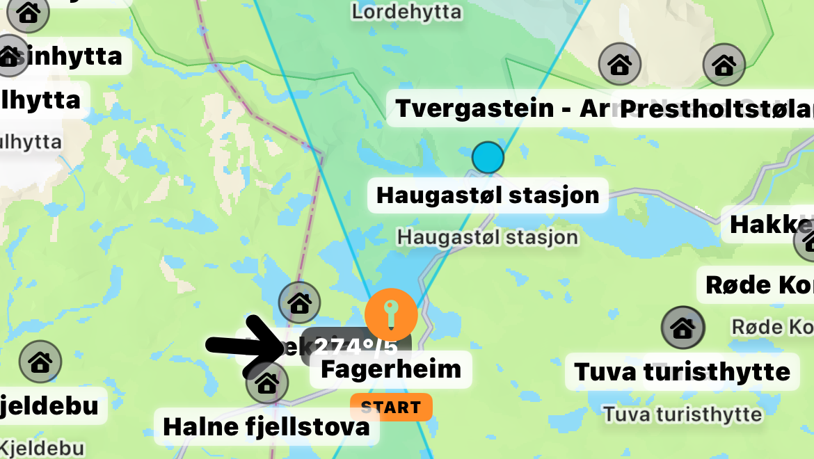

NaviKite 2026
NaviKite User Guide
En praktisk guide til NaviKite slik appen fungerer i siste beta: navigasjon, kart, ruter, talevarsler, TurTips, offline-kart og Apple Watch.

Kortversjon
NaviKite er et navigasjonshjelpemiddel for snøkitere og fjellfolk. Appen gir retning, avstand og situasjonsforståelse med tale, skjerm, kart og Apple Watch.
NaviKite erstatter ikke kart, kompass, værvurdering eller fjellvett. Veiledningen er som regel luftlinje mot destinasjon, ruteveipunkt eller base; du velger fortsatt trygg linje.
Kom raskt i gang
- Marker base før du drar hvis du kan få behov for Return to Base.
- Velg destinasjon, lagret punkt, hytte, rute eller GPX-punkt.
- Sjekk ruten i kartet før du bekrefter start.
- Velg Kite for vanlig snøkiting, eller Walk / Ski ved sakte forflytning.
- Sett lydoppdateringer til 10, 20, 30 eller 60 sekunder, 3 eller 5 minutter, eller kun kommando.
Før navigasjon fungerer forsiden som kompass/kartoversikt. Under navigasjon viser NaviKite aktivt mål, avstand og retning. Bruk SCREEN hvis telefonen ligger synlig i armlomme; Exit slår det av igjen.
Ruter, GPX og deling
Du kan lage ruter i NaviKite, importere GPX, endre lagrede ruter og dele ferdige ruter via AirDrop eller Meldinger. Venner kan åpne GPX-filen i NaviKite og få samme rute.
Før start viser NaviKite en rutesjekk i fullskjermkart. Der ser du linje, avstand og høydeinformasjon når den er tilgjengelig. Navigasjonen starter først etter at du bekrefter.
Ruteveipunkter går videre når du er nær nok, normalt innenfor ca. 100 m. Bruk “neste veipunkt” hvis du vil hoppe videre manuelt.
Talevarsler og Siri
Automatiske talevarsler følger intervallet i Innstillinger. Normale readouts gir retning og noen ganger avstand. NaviKite forsøker å ikke gjenta samme statusmelding unødvendig når du står stille eller mangler god kurs.
Bruk Kito, Keeto eller Keto som Siri-kodeord, uttalt “kee-to”. Korte kommandoer fungerer best, særlig i vind eller fra låst skjerm.
Kito oppdater
Kito base
Kito hytte
Kito neste
Kito stopp tale
Kito start tale
Kito stopp navigasjon
Kito whiteout
Siri-kommandoer starter handlingen direkte uten kartbekreftelse, slik at de fungerer i felt når du ikke vil håndtere telefonen.
Apple Watch
Installer NaviKite fra TestFlight på den sammenkoblede iPhonen. Watch-appen installeres vanligvis automatisk; hvis ikke, aktiver NaviKiteWatch i Watch-appen.
Start navigasjon på telefonen og åpne NaviKiteWatch. Grønn PHONE betyr at klokken mottar fersk navigasjon fra telefonen. Gul LOCAL betyr at klokken midlertidig navigerer mot sist mottatte destinasjon med egen GPS. Rød SYNC eller NO PHONE betyr at forbindelsen ikke er klar.
Under bevegelse viser TRAVEL fartsretningen din, mens DEST peker mot destinasjonen. Når du står stille går klokken over til roterende kompassrose med destinasjonen markert rundt ytterkanten.
Plan, vind og TurTips
PLAN viser utvalgte målestasjoner i fjellet med vindstyrke, vindretning og observasjonstid. Panelet kan også vise veistatus, webkamera og Yr-varsel for stasjoner eller egne spots.
TurTips bruker valgt startpunkt, vindretning, sidevindsektorer og offline-destinasjoner over 900 m innen 60 km. DNT og bemannede hytter prioriteres der det er relevant. Kartet viser også vindsektorer, selv når det ikke finnes en konkret match i listen.

Innstillinger og offline-kart
Sveip venstre eller høyre fra forsiden for å åpne Innstillinger. Her velger du reisemodus, lydintervall, distanse i oppdateringer, taleveiledning, turlogg, språk og offline-kart.
Offline-kart er en beta-funksjon: velg område, last ned før turen, og NaviKite prøver lokale Kartverket-fliser før nettfliser. Online og offline topografiske kart er foreløpig begrenset til Norge.
Kartdata fra Kartverket brukes i tråd med Kartverkets vilkår for åpne data, og kartvisningene skal ha synlig kreditering. Les vilkårene her: Kartverkets vilkår for bruk.
Offline-punkter vises både på kartet og i TurTips som nyttig kontroll på koordinatene.
Turlogg
Slå på Turlogg i Innstillinger. Når navigasjon starter, spør NaviKite om turen skal loggføres. Du kan også trykke Start Logging på forsiden for å loggføre en tur uten destinasjon eller rute.
Når loggingen avsluttes viser NaviKite et turreferat med distanse, tid, fart, høydemetre og antall punkter. Trip Logs viser enkeltturer, sesongsummeringer fra juni til juni og totalen fra appen ble tatt i bruk.
Feilsøking og beta
Hvis kartet mangler, sjekk nett eller last ned offline-kart før tur. Hvis readouts virker gamle, sjekk at tale er på, at stedstillatelse er Always / Alltid, og at Low Power Mode ikke begrenser bakgrunnsoppdateringer.
Hvis Siri misforstår, bruk kortere Kito-kommandoer. NaviKite er under aktiv beta-testing; konkrete eksempler fra ekte turer er den mest nyttige tilbakemeldingen.
Send tilbakemelding